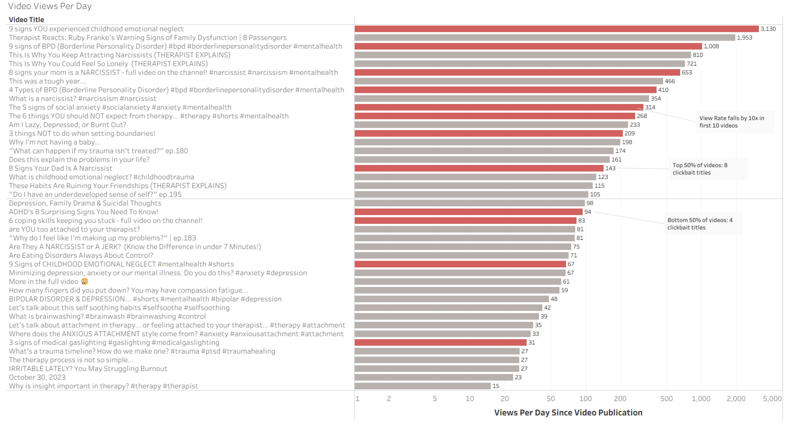
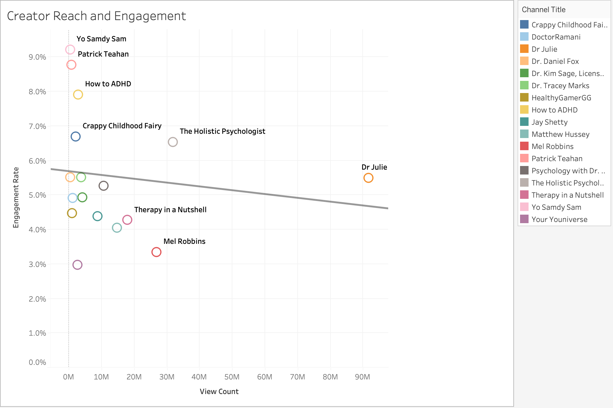
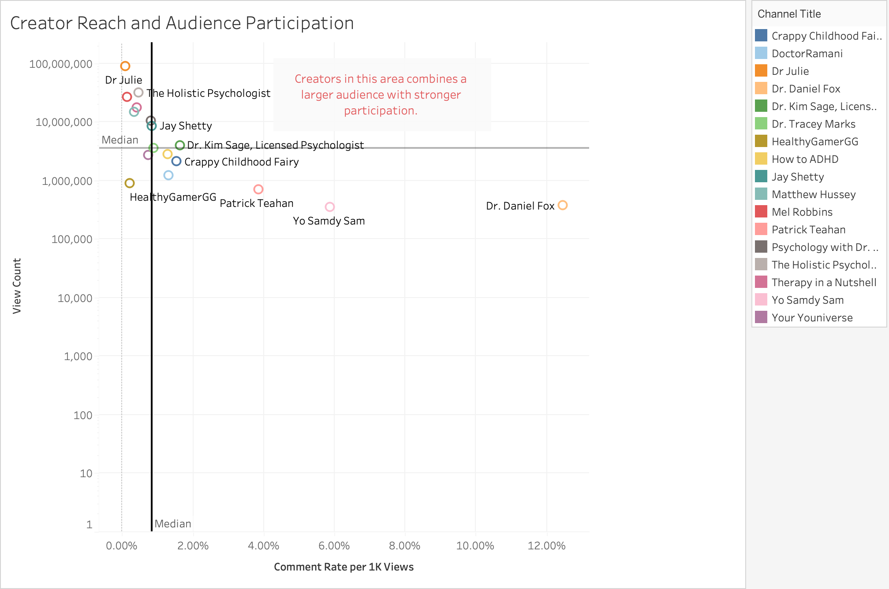

项目 03
Tableau 数据分析
YouTube 心理健康内容与创作者分析
项目简介
本项目基于 2023–2025 年心理健康 YouTube 创作者及视频数据，使用 Tableau 对内容供给、 视频观看量、受众参与度和创作者表现进行可视化分析。
分析从整体市场趋势出发，进一步观察视频标题、 创作者触达及用户互动之间的关系，并最终结合 受众触达与参与度，为创作者选择提供数据支持。
01｜市场趋势

分析 2023–2025 年心理健康 YouTube 内容供给与受众注意力的变化， 了解整体市场环境及受众关注度的发展趋势。
02｜视频观看量与标题特征

探索视频标题特征与观看表现之间的关系， 分析不同标题类型在吸引受众注意力方面的差异。
03｜创作者触达与用户互动

比较不同创作者的受众触达与用户互动表现， 观察较大的受众规模是否能够转化为更高的互动率。
04｜创作者选择

综合受众触达与用户参与度， 识别同时具备较高触达和参与度的创作者， 为不同营销目标下的创作者选择提供参考。
核心发现
2023–2025 年，心理健康 YouTube 市场的内容供给持续扩大，市场竞争也更加激烈。但从受众表现来看，注意力仍然主要集中在少数创作者身上，说明内容数量的增长并不意味着受众注意力会平均分配到所有创作者。
在内容层面，标题表达方式也可能影响视频的观看表现。表现较好的视频中，可以观察到较多使用数字和明确结构的吸睛型标题。这类标题能够快速传递具体的信息点，因此可能有助于提升用户点击和视频观看量。
在此基础上，创作者的选择还需要结合具体的营销目标。如果目标是扩大品牌曝光，具有较高受众触达的创作者可能更合适；如果目标是提升用户互动，则互动率较高的创作者可能更具优势。
因此，创作者选择并不存在一个适用于所有场景的最佳答案，而应根据营销目标，在受众触达与用户参与之间进行权衡。